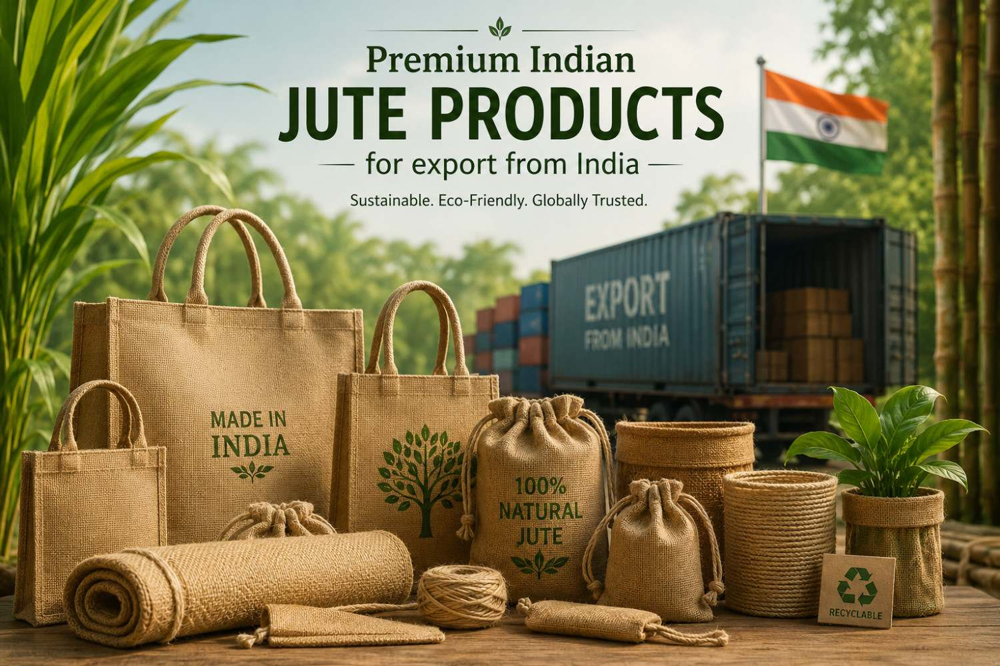
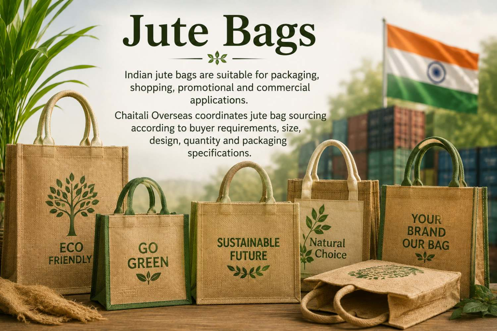
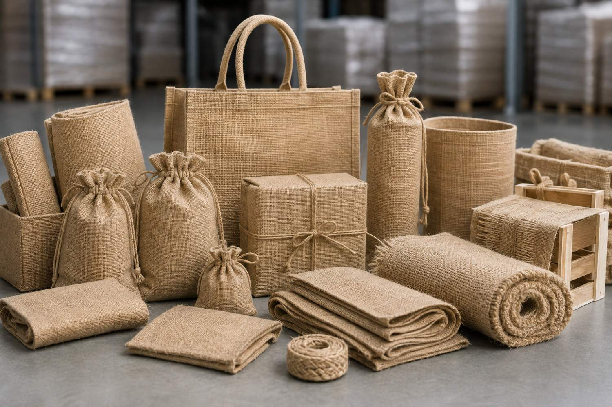
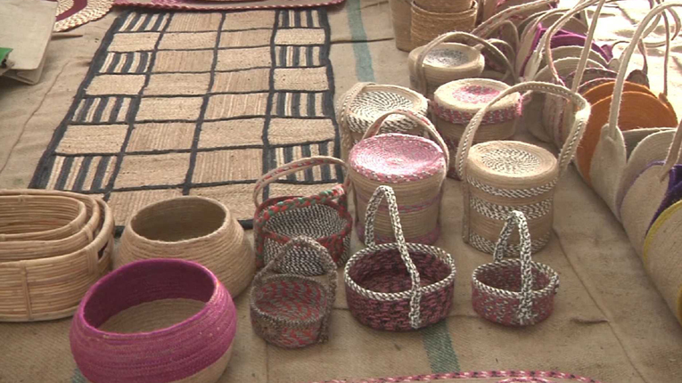
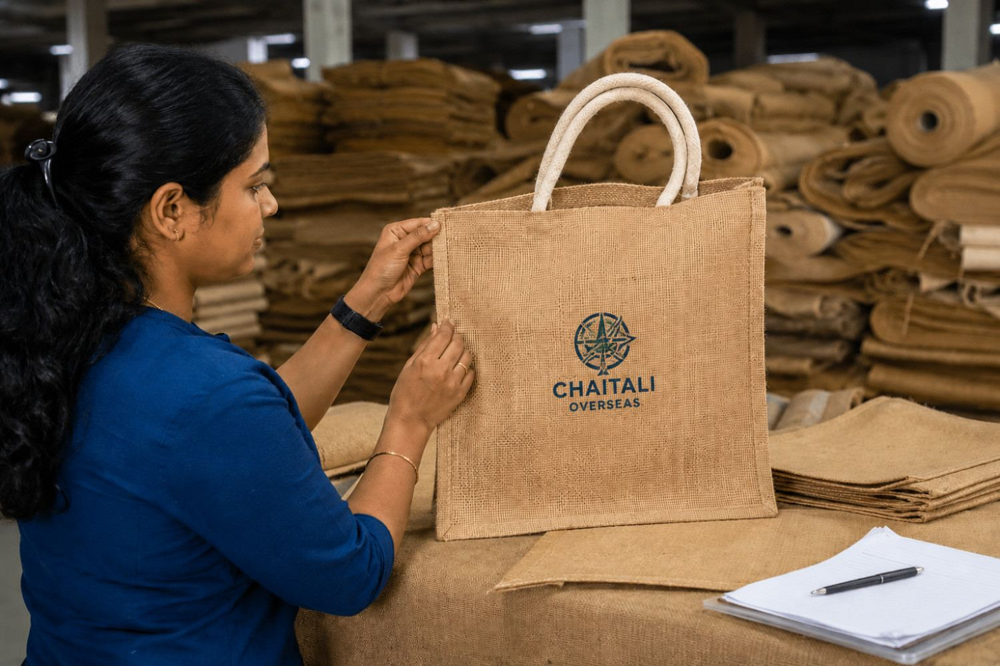
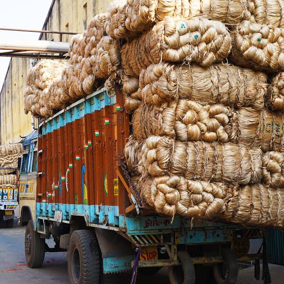

Chaitali Overseas is an India-based merchant exporter supplying jute products to international importers, wholesalers, distributors and bulk buyers. We coordinate sourcing of jute products according to buyer requirements, product specifications, quantity, packaging and destination-market needs.
We work with suitable Indian sourcing partners to coordinate jute product requirements according to agreed product specifications, commercial terms and order requirements.
Our export approach focuses on product specifications, quality requirements, packaging and coordinated shipment arrangements for buyers looking to source jute products from India.
Jute products sourced through suitable Indian supply networks according to buyer specifications, product requirements and order quantities.
Jute product supply coordinated for international buyers according to agreed specifications, packaging requirements and export arrangements.

Indian jute bags are suitable for packaging, shopping, promotional and commercial applications. Chaitali Overseas coordinates jute bag sourcing according to buyer requirements, size, design, quantity and packaging specifications.
Enquire Now
Jute packaging products can be sourced for commercial and industrial requirements where natural jute-based materials are preferred. Product specifications, dimensions, quantity and packaging can be discussed according to buyer requirements.
Enquire Now
We coordinate sourcing of jute sacks and other jute goods for international buyers according to required specifications, order quantities, packaging requirements and destination-market needs.
Enquire NowWe coordinate jute product sourcing according to agreed specifications, product type, dimensions, quantity and buyer requirements.
Packaging requirements are discussed according to product type, order quantity, buyer preference and destination-market requirements.
We discuss product specifications, quantity, packaging and commercial requirements with buyers before order confirmation.

India has an established jute industry and supply network supporting a wide range of jute fibres, jute goods and jute-based products. Chaitali Overseas connects international buyers with suitable Indian sourcing options according to product specifications, quantities, packaging and commercial requirements.
Jute products sourced through suitable Indian suppliers according to buyer specifications and order requirements.
Different jute products can be discussed according to commercial, packaging, promotional and other buyer requirements.
Packaging requirements can be coordinated according to product type, quantity and buyer specifications.
Coordinated jute product sourcing and export arrangements for international importers, wholesalers and bulk buyers.

Chaitali Overseas supports international buyers seeking jute products from India for different commercial requirements. We coordinate product sourcing, specifications, quantities, packaging and export arrangements according to the buyer's requirements.
Share your required jute product, specifications, quantity, packaging preference and destination with Chaitali Overseas. We coordinate suitable Indian jute product sourcing and export arrangements for international buyers according to agreed requirements.